Sofa trends move slower than most other home categories, mostly because nobody wants to replace a sofa every year.
That makes the "is this worth it" question more important here than almost anywhere else in the house.
This sorts 10 current sofa trends into what's a real long-term shift and what's likely to feel dated sooner than expected. For help actually choosing a sofa shape and color for a specific room, a fuller sofa buying guide covers that ground in more depth.
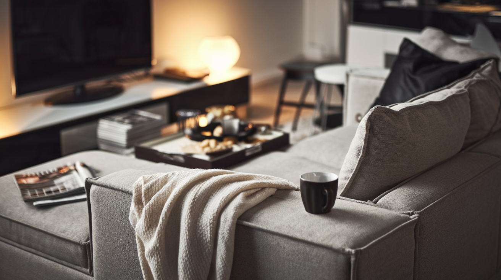
10 Sofa Trends Sorted Out
1. Statement Sofas: Depends Entirely on the Piece
A sculptural or deliberately bold sofa works as a long-term centerpiece when the shape itself is genuinely well-designed, not just unusual for its own sake.
This is the trend most worth scrutinizing piece by piece, since "statement" covers both genuinely great design and short-lived novelty in roughly equal measure.
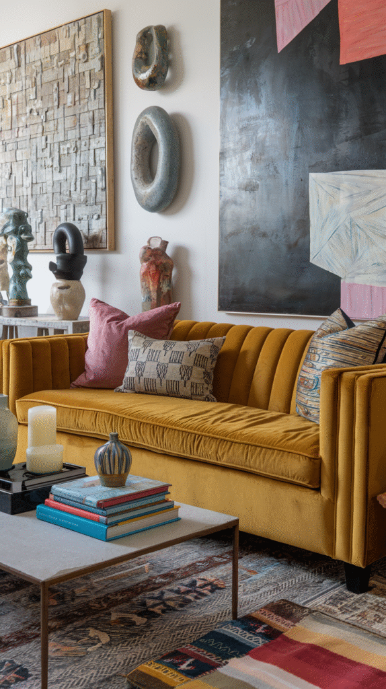
2. Sustainable and Eco-Friendly Sofas: A Real, Growing Shift
Responsibly sourced materials and more sustainable manufacturing are becoming a genuine purchasing factor rather than a niche concern, which marks this as one of the newest and most substantive shifts on this list.
This is worth real attention for anyone currently shopping, since it's likely to keep growing rather than fade.
3. Recliner Sofas: A Genuine Comeback
Recliner sofas have shed a lot of their dated reputation thanks to sleeker, more modern silhouettes that no longer scream "man cave" the way older designs did.
This is a real, newer shift worth paying attention to, not just a rebrand of something that was already common.
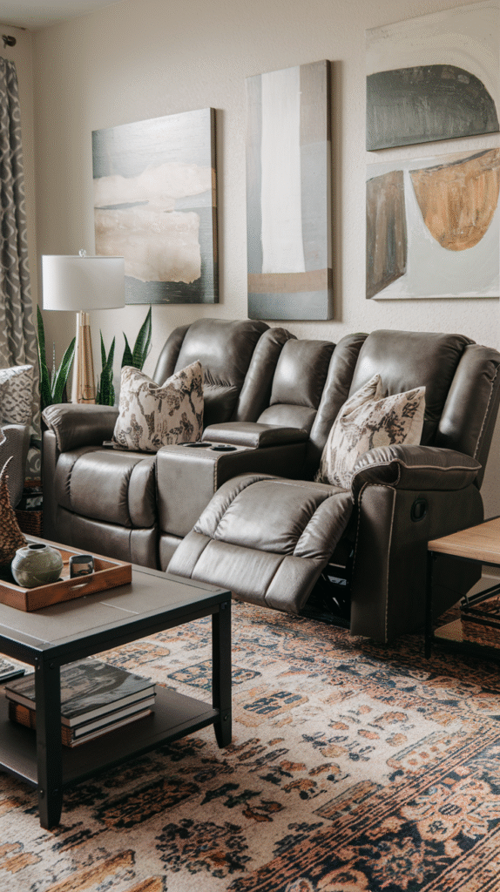
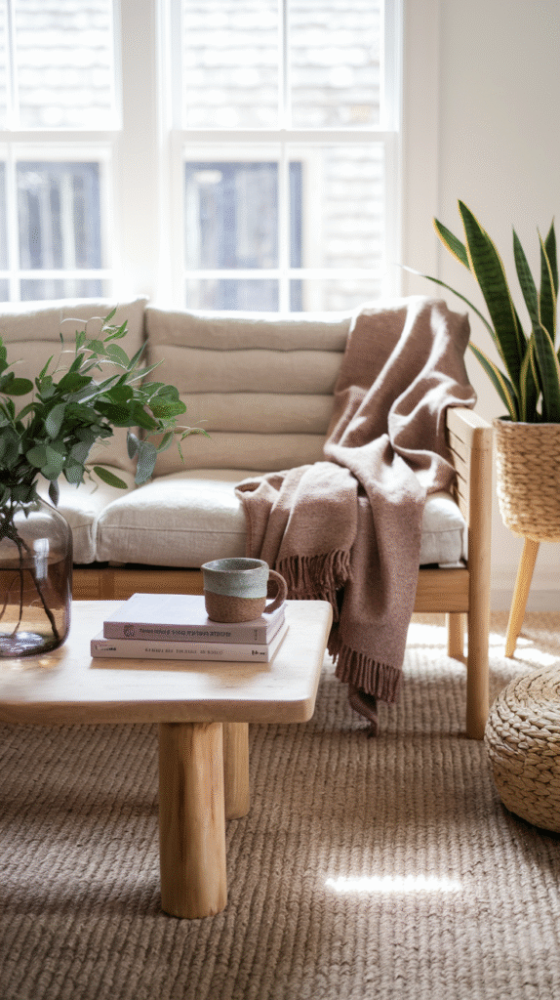
4. Loveseats: A Practical Constant, Not a Trend
A loveseat's appeal is almost entirely about fitting a smaller space well, which makes it more of a permanent practical option than something that rises or falls with trend cycles.
5. Sectionals: Timeless, Not Trending
Sectionals solve genuine family-room seating math that no trend cycle changes, which puts this firmly in timeless-choice territory rather than trend territory at all.
The real decision here is configuration and size, not whether sectionals themselves are still "in."
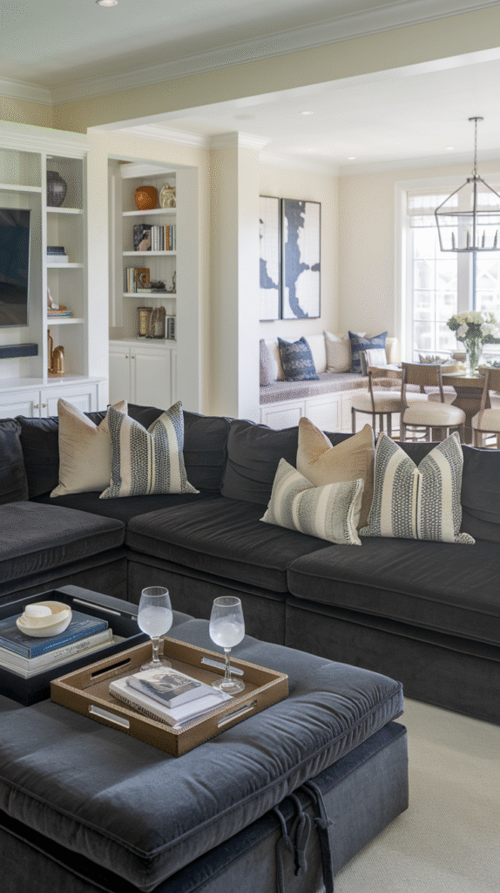
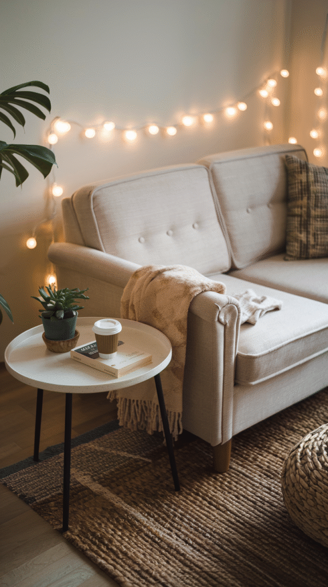
6. Textured Fabrics: Likely to Stick Around
Bouclé and other heavily textured fabrics have moved from trend piece to genuine category over the past few years, suggesting real staying power rather than a passing fad.
The main risk isn't the texture itself, but choosing a fabric that's harder to clean without realizing it going in.
7. Modular Sofas: A Genuinely Practical Long-Term Bet
Modular configurations solve a real, ongoing problem, a layout that can actually change as a space or a life stage changes, which gives this trend practical staying power well beyond aesthetics alone.
This is one of the safer trend bets on this list, precisely because its value isn't tied to looking current.
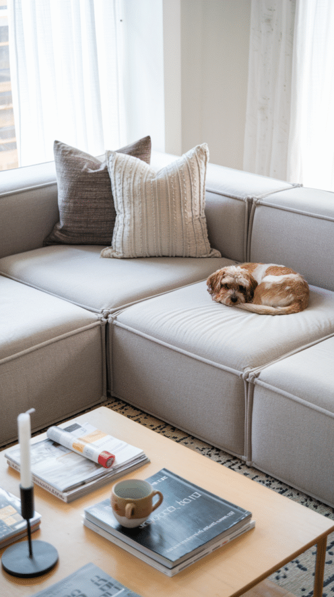
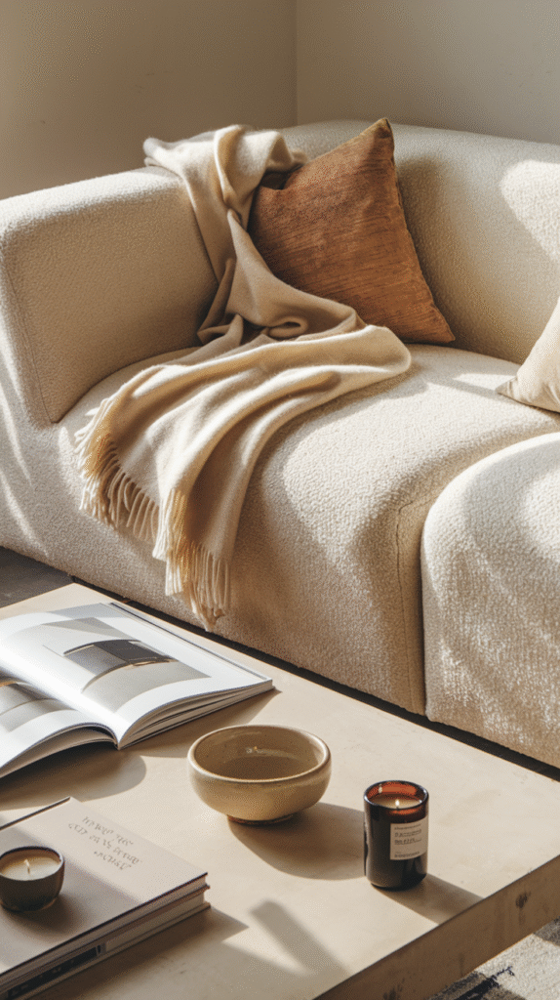
8. Low-Slung Loungers: A Style Commitment, Not Just a Trend
A low-profile sofa changes the room's whole proportions, not just the furniture itself, which makes it more of a genuine style decision than a simple trend to try out.
Worth it for someone already leaning toward a relaxed, modern aesthetic; a bigger gamble for anyone still deciding on the room's overall direction.
9. Bold Colors: Worth It If It's a Real Color, Not a Trend Color
A genuinely well-chosen bold color, one picked because it suits the room, not because it's having a moment, tends to age fine.
A color picked purely because it's trending right now carries more real risk of feeling dated once the trend cycle moves on.
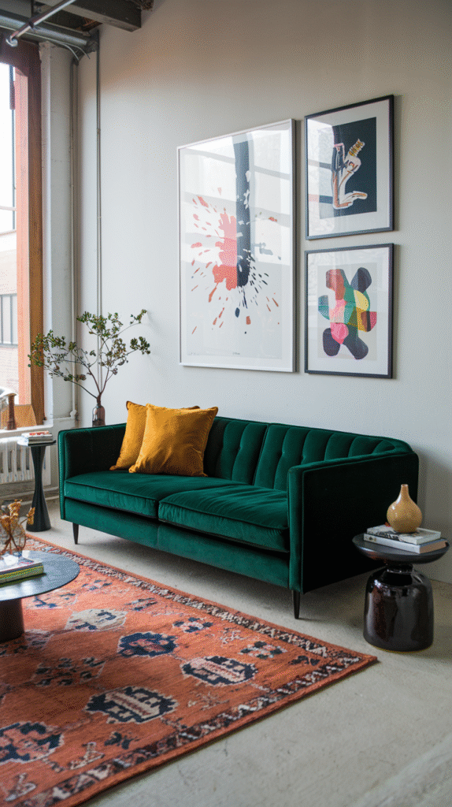
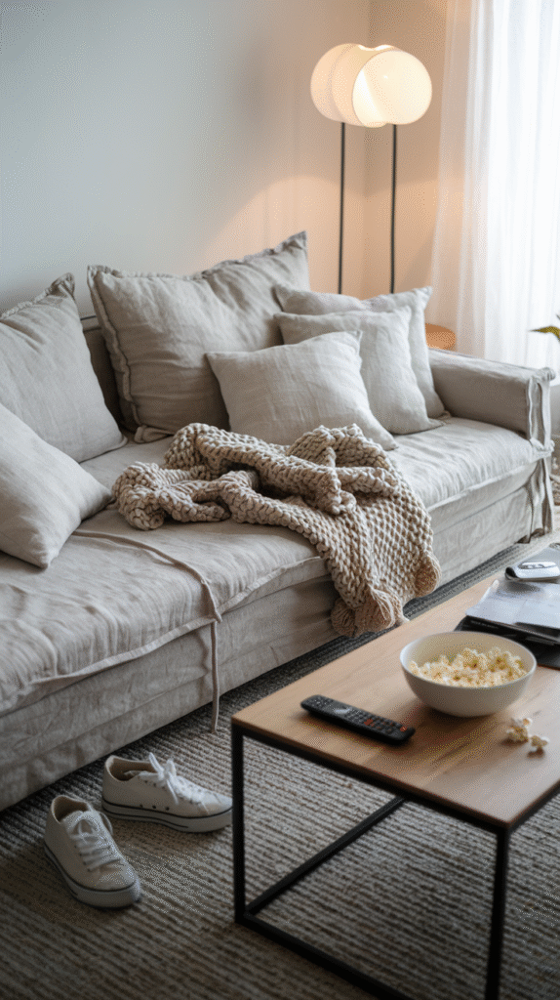
10. Curved Sofas: A Lasting Shift
The curved silhouette has held on long enough now to read as a genuine category, not a passing moment, and it solves a real layout problem by softening a room full of hard angles.
This is a safe long-term investment rather than a trend likely to feel dated in a year or two.
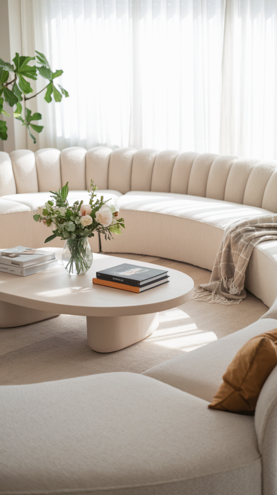
Which Trends Are Actually Worth Following
Curved shapes, modular configurations, sectionals, and loveseats are the safest bets here, since their appeal rests on genuine function rather than a passing aesthetic moment.
Bold colors and statement pieces deserve more scrutiny, since their long-term success depends heavily on the specific piece, not the trend category itself.
For the deeper work of matching a shape, size, and color to an actual room, that's exactly what a fuller sofa buying guide is built to help with.